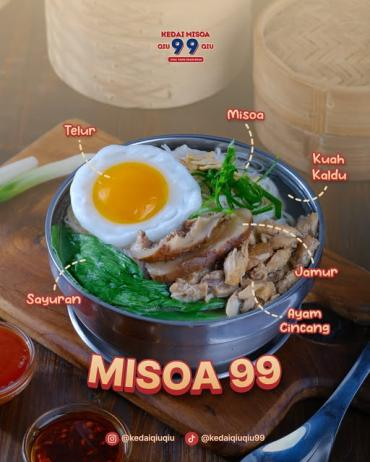
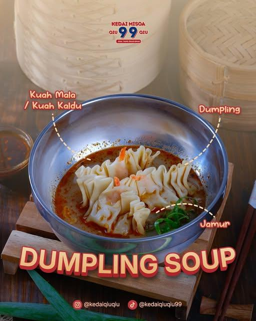
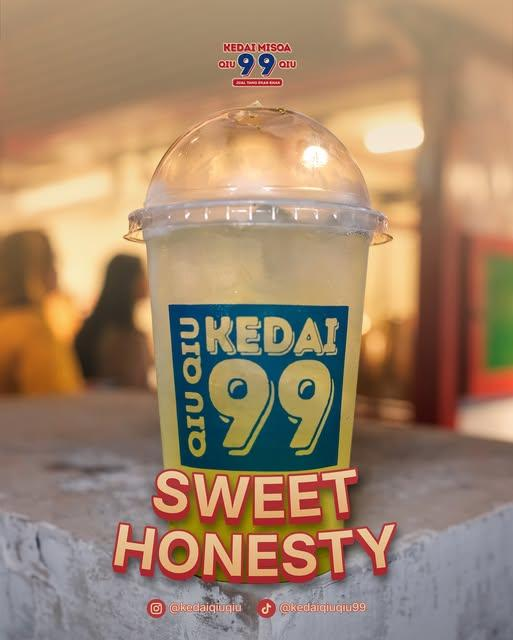
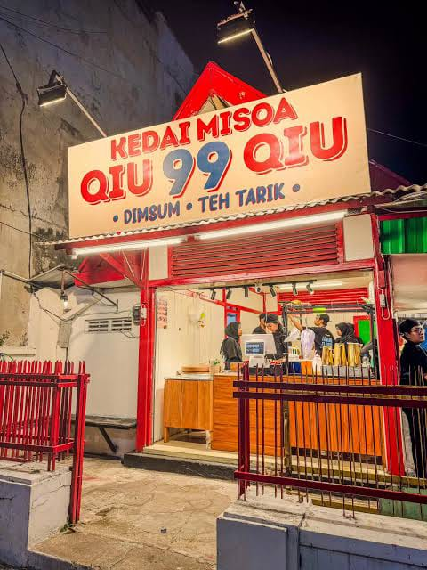

Klitren, Yogyakarta
Rumah pertama kami, di kawasan Jl. Langensari, Klitren (Gondokusuman).
Buka petaMisoa • Dimsum • Minuman segar
Semangkuk misoa hangat dengan pilihan kuah kaldu, mala, atau creamy, ditemani dimsum dan minuman segar. Dari dapur kami di Yogyakarta dan Solo untuk meja makanmu.




Kedai Misoa Qiu Qiu 99 berawal dari kebiasaan sederhana: sang pemilik sering dimasakkan misoa oleh mamanya, dengan cita rasa rumahan yang hangat dan selalu bikin kangen. Dari kenangan itulah muncul ide untuk membagikan rasa yang sama kepada lebih banyak orang, hingga akhirnya kedai ini resmi berdiri pada Februari 2025.
Misoa adalah mi tipis berbahan tepung dengan tekstur lembut. Karena mudah dipadukan dengan berbagai kuah dan topping, misoa bisa diolah menjadi banyak menu yang pas di lidah orang Indonesia. Di Kedai Misoa Qiu Qiu, ada beberapa varian dengan rasa yang berbeda-beda.
Kuah kaldunya dibuat dari rebusan ayam dan bawang putih yang dimasak lama, hingga 12 jam. Hasilnya gurih, kental, dan kaya rasa.
Tim yang menyiapkan setiap mangkuk misoa untuk Anda.
Klik foto untuk memperbesar. Harga bisa ditanyakan langsung lewat WhatsApp.
Pilih cabang terdekat. Tombol peta membuka lokasi langsung di Google Maps.
Rumah pertama kami, di kawasan Jl. Langensari, Klitren (Gondokusuman).
Buka petaCabang Condong Catur untuk Anda yang tinggal di Sleman dan sekitarnya.
Buka petaCabang Solo, siap melayani pecinta misoa di Surakarta.
Buka petaTanya menu dan harga, atau langsung pesan lewat chat.